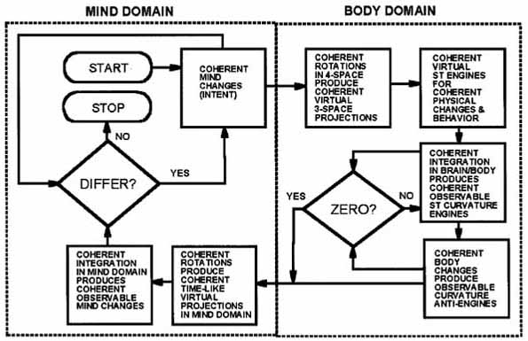

| General Relativity Aspects
Both these coupling mechanisms can be taken directly from general relativity, if one puts one's mind to it. However, unless the wave polarization transformations are known, it is difficult or impossible to apply the ordinary GR
directly, since relativists usually concentrate upon spacetime curvature by altering 3-space energy density rather than by altering time-polarized "time-energy" density.
|
has been filed with the U.S. Patent Office, and formal patent applications are in preparation. Some information on these mechanisms and principles has been released17.
Time as Dense EM Energy The advantage of using the time-polarized "time-energy" for spacetime curvature is that time is ordinary energy compressed by a factor of at least c2—which, in the MKS system of units, is some 9¥1016. Thus use of time-polarized EM photons and waves as ST curvature agents gives an amplification of 9¥1016 over the use of transverse-polarized EM waves for that purpose. In turn, the use of the strong EM force in ordinary TW waves as an agent of ST curvature is already a nominal 1040 times as strong as is the weak G force used as the agent of ST curvature. The bottom line is this: For spacetime curvature effects, the use of the t-polarized domain provides amplification of some 9¥1056 greater than the weak G-force ST curvature agent usually considered in general relativity18. Western Science Remains Largely Materialistic Ironically, most Western scientists are materialists and consider "mind" as a mystical and nonscientific concept. They tend to consider mind operations and functions either to be simply "meat computer" operations and functions, or at best to be very weak ordinary transverse-wave EM operations and functions in the brain and nervous system.8 This serious self-limitation exists because in the body we measure only weak TW EM operations and functions correlated to biological behavior and brain operations. We simply do not know how to measure "mind operations" directly. |
|
 Figure 5. Mind-to body coupling and body-to-mind coupling. |